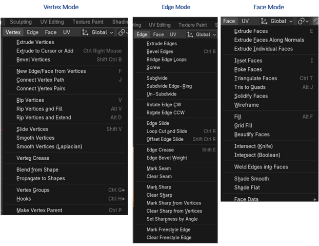

~The Sub Menu ~
Edit Mode
5/26/2025
The Differences Between Object Mode and Edit Mode, Sub Menus
The Mesh Component section of the Sub Menu
The last section of the Sub menu
The Differences Between Object Mode and Edit Mode, Sub Menus
You will find that the sub menu within Edit mode, has quite a few of things that are unique to just the workspace of Editing. For contrast, let’s take a look at the two sub menus of both the Object workspace and the Edit mode work space together.
The Mid -Section of Buttons
The Proportional Editing button can be found about mid-way on the sub menus path of buttons. In Blender, Proportional Editing is available in both Object mode, and Edit mode. The difference between the two, is that the proportional editing in object mode, affects the entire object; on the other hand, when in the Edit mode, Proportional Editing affects individual mesh components.
The reasons that I left this center section out of both sections of the illustrations above, is for one space considerations on this webpage, and for another, with exception to the differences stated with Proportional editing, these icons are pretty much the same between both workspaces.
Mesh Component Buttons
When we first take a look at the entire line up of buttons on this sub menu, within Edit mode, we will find that the first thing that stands out to be different from Object mode’s variation of the sub menu, will be this string of buttons that allows us to target different types of our mesh’s components. This makes sense, and is important to be able to work in editing because it allows us to target individual components of our mesh; specifically, vertices, edges or faces. Without this ability, it would be impossible for us to be able to do anything meaningfully inside of this workspace.
The Sub Menu Buttons
If you look further down the line in this sub menu buttons, you will find this line up of buttons. As demonstrated, in the image shown below. The first few menu items are basically the same as was found in the Object workspace sub menu; however, one button in this Editing workspace area clearly stands out to be different. This unique Mesh item will work specifically with being able to manipulate the different mesh components.
This is what the Mesh’s sub menu looks like. As you can see these available menu options target the manipulation of all of the different types of mesh components. Comprising of Vertices, Edges and Faces.
The Mesh Component section of the Sub Menu
This section of the menu, in contrast with the Mesh menu item, is more specific to each of the 3 different mesh components, in which we can work with while in Edit mode.
And when you click on each of these Menu items you can view the collection of options that are unique to each of the the mode.

Now that UV button here, has to do with unwrapping an object and it is really better to working with unwrapping objects in the UV Editing workspace, and not Edit Mode. So, we will skip that button for now.
Proportional Editing Button
This is the proportional editing button. There is a difference between just moving the selected mesh component, and using the proportional editing button to move that same item.
When you have this button on, not only is the selected component affected, but the mesh around it is also affected by the movement of one element.
We can control how much is affected around this vertex by rolling the mouse wheel, once you start moving the vertex around. The wheel will not engage in resizing the affect, until after you start moving that vertex first.
The last section of the Sub menu
For the most part this last section will be a match to the one that you find in the Object mode one, except for one button.
This button relates to the Mesh Edit Mode Overlays Menu. We can get further into these unique sections of these menu items as we get progress through this course. But for the most part it deals with how you will see the object displayed differently within the Viewport, while in Edit mode.
This is about it to this sub menu. It is important to have additional menus for each of these workspaces. Each space is unique, and need very specified options available to the user.